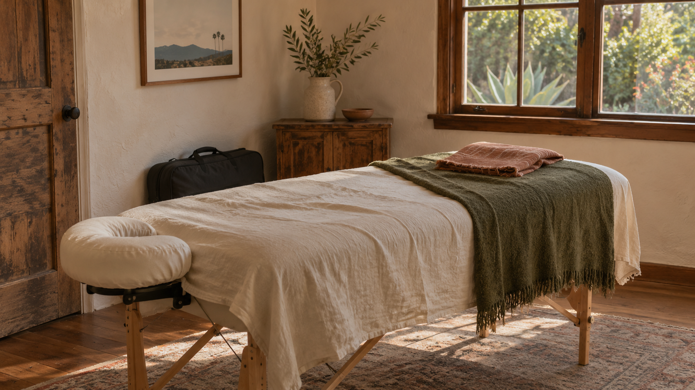

60 minutes
$120
Enough time for a full-body massage or more focused work on one or two areas.
Talk with Sage
Sage provides private, in-home massage throughout Santa Barbara, Montecito, and Goleta. He brings everything needed for the session. Before he begins, you can tell him what has been feeling tight, sore, overworked, or simply in need of attention. He listens, and the work takes shape from there.
Talk with Sage Santa Barbara · Montecito · GoletaA session starts with a conversation about how your body has been feeling and the kind of pressure you prefer. Sage pays attention as he works and adjusts when something needs more or less time. When he is finished, you can rest instead of getting back in the car.
You do not need to choose between deep tissue, Swedish massage, sports massage, or cupping before you schedule. Tell Sage what has been going on, and he will talk through what makes sense for the session.
$120
Enough time for a full-body massage or more focused work on one or two areas.
Talk with Sage$175
More room to work slowly, spend time on several areas, or support recovery after training and activity.
Talk with SageDeep tissue, Swedish massage, sports massage, cupping, and scraping may all be part of a session. Sage talks with you first, then uses what fits the work instead of asking you to choose a technique in advance.
Slower, more specific pressure for areas that feel persistently tight or overworked. Deep tissue does not have to mean maximum pressure; Sage checks in and adjusts as he works.
Longer, flowing strokes with gentle to moderate pressure. It can be used for full-body massage, general soreness, and time to settle.
Focused work for areas affected by training, repetitive movement, or physically demanding work. The session can concentrate on the parts of the body carrying the most load.
Suction cups are placed on selected areas for a short period of time. Sage explains what to expect and asks before including them. Cupping can leave temporary circular marks.
A smooth-edged tool is used with oil over tight or heavily used areas. Sage explains the technique first and adjusts the pressure to your comfort.
Sage pays attention to what people tell him, but also to what changes under his hands as the session develops.
Sage is a California native who came to massage through his love of working with his hands and his interest in how the body works. What keeps him in the work is helping people feel more comfortable in their bodies and less burdened by tension, soreness, and stress.
He trained at the Costa Rica School of Massage Therapy in Sámara, Costa Rica, where he completed an intensive massage therapy program and gained hands-on experience through the school’s community clinic.
Through his professional work with PROCOVRY in Santa Barbara, Sage has continued developing his skills in deep tissue and Swedish massage, sports and recovery-focused bodywork, cupping, and scraping. He does not follow the same routine with every person. He listens, notices how the body responds, and lets the session change when it needs to.
Throughout the session, Sage checks in about pressure and comfort and explains anything unfamiliar before using it. He brings the table, linens, and supplies and takes care of setup and breakdown.
“Sage is very calming, and I felt that he connected with my body immediately—before I was even on the table. I could tell that he had connected not only with my body, but was also attuned to my emotions. Additionally, I came to Sage with a specific issue and, after a few sessions, found significant relief.”
“Sage has magical hands! He really has this amazing ability to find what parts of your body need to be worked on (some that you might not even realize) while creating such a calming and healing atmosphere during the process. He goes above and beyond the typical massage experience and is the person I return to when I want to feel rejuvenated and whole again!”
Choose a time for a phone or video conversation with Sage. You can share what you’re looking for, ask questions, and talk through whether a 60- or 90-minute in-home massage session is the right fit.